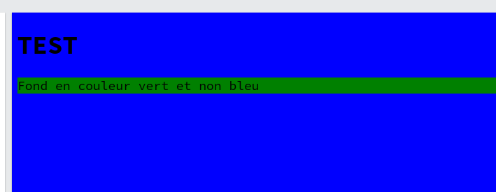

Sert à quoi ?
Le CSS (Cascading Style Sheets) est un langage de feuilles de style utilisé pour décrire la présentation d'un document écrit en langage de balisage comme HTML. Le CSS permet de contrôler la mise en forme et la mise en page des éléments d'une page web, tels que la couleur, la taille, la police, la disposition et d'autres aspects visuels.
Installer ?
Css est nativement comprit par le navigateur web. Il ne faut rien installer mais simplement incluer ou lier notre css dans notre page web.
Au niveau du navigateur c'est le moteur de rendu qui va se charger de comprendre le css et en réaliser l'affichage. Css est une façon de demander à notre navigateur de mettre en couleur, ajouter des espaces, disposé notre html
Intégration
Dans le HTML
On peut utiliser la base header d'html pour y inclure une balise style afin d'y ajouter notre css
<!DOCTYPE html>
<html>
<head>
<title>Title of the document</title>
<style>body {background-color: red}</style>
</head>
<body>
Fond en couleur rouge
</body>
</html>
L'inconvénient de cette methode c'est qu'elle oblige à mettre tout son css dans le head ce qui rend le tout pas très lisible.
Dans la balise html
Chaque balise html possède l'attribut style. Celui ci permet d'ajouter du css qui va s'appliquer uniquement sur la balise en question
<!DOCTYPE html>
<html>
<head>
<title>Title of the document</title>
</head>
<body style="background-color: red">
Fond en couleur rouge
</body>
</html>
Il est impossible de généraliser et réutiliser le css. Celui ci va être limité à la balise html
Un fichier séparé
Il est possible de joindre un fichier a notre page html.
On va ainsi pouvoir séparer l'html du css et réutiliser du css
<!DOCTYPE html>
<html>
<head>
<title>Title of the document</title>
<link href="styles/style.css" rel="stylesheet" type="text/css" />
</head>
<body>
Fond en couleur rouge
</body>
</html>
Et on ajoute notre css dans le fichier style.css qui ici se trouve lui mm dans le repertoire styles
body {
background-color: red;
}

Lien entre CSS et HTML
Pour appliquer un css sur un élément html on va utiliser un selecteur.
Le selecteur et un moyen d'indiquer à CSS l'endroit dans notre page html où il doit s'appliquer.
Chaque balise html est elle un selecteur. C'est le selecteur le plus simple et générale.
Si je désire définir une taille de police de caractère pour mon texte ( balise p ) je vais pouvoir indiquer la base comme selecteur et lui attributé une déclaration.
p {
/* le contenu de mon tag p devrat prendre une taille de 34 pixel */
font-size: 34px;
}
Il est possible de chainer les element html pour constuire un selecteur plus précis.
Par exemple body p a est un selecteur qui ne cible que les balises a se trouvant dans un balise p elle même dans la balise body
/* selecteur précis */
body p a { font-size: 12px: }
/* selecteur général */
a {font-size: 34px;}
Class et Id
Il est possible pour chaque balise html d'ajouter un attribut class ou id
Une class est un sélecteur utilisé pour appliquer un ensemble de styles à un ou plusieurs éléments HTML.
Elle permet de regrouper des styles spécifiques sous un nom unique, qui peut ensuite être réutilisé sur plusieurs éléments HTML sans avoir à répéter les mêmes styles à chaque fois.
Un id est un sélecteur utilisé pour appliquer des styles à un élément HTML spécifique.
Contrairement aux classes, qui peuvent être réutilisées plusieurs fois dans un document HTML, un id est unique dans un document.
<div id="logo">
<img src="logo.png" alt="image du logo">MyLogo
</div>
<p class=info-box>
ma box 1
</p>
<p class=info-box>
ma box avec le mm style que ma box 1
</p>
<p>
Aucun style!
</p>
/* class se préfix avec un . devant le nom. Le nom est au choix du développeur */
.info-box { font-size: 12px: }
/* id lui se préfix avec un # */
#logo {font-size: 34px;}
Cascade ?
Css s'applique en cascade sur la structure html c'est à dire qu'un style appliquer sur une balise se répercute sur ses enfants
Il faut se souvenir que chaque element html se trouve lui même dans un élément parent.

Si je donne un background-color a mon body, ses éléments enfants vont en bénéficier aussi.
Par contre rien n'empéche l'enfant de définir lui même son propre css.
Si je désire donner un fond bleu sur mon body ainsi que mon titre ( h1 ) mais avoir une couleur verte pour mon paragraphe je peux
body {
background-color: blue;
}
p {
background-color: green;
}
Le titre h1 va hérité du css appliqué à son parent body et donc s'afficher lui aussi avec un fond bleu.
Tandis que que p va lui bénéficier de son propre css et s'afficher avec un fond vert

Anatomie

Le selecteur est là où le css va s'appliquer.
Le contenu est toujours entre {}.
Ce contnu se nomme la déclaration.
Une déclaration est constitué de 1 à N rule c'est à dire une property accompagné de sa valeur.
Les properties sont toute référencés sur W3c
Selector !
Le selector est le moyen d'indiquer à css où agir. On a vut précédement deux selecteurs: class et id.
Il existe toute une serie de selecteur afin de cibler précisement certains element html.
Maitriser les selecteurs c'est utile pour le css mais aussi pour le javascript et le scrapping.
Selector de type
Assez généraliste et simple, c'est un selecteur qui cible directement un tag html.
Le css ajouter en utilisant ce tag va s'appliquer sur tout les element html du même tag.
a {
/* ici on demande que tout les tags a prennent le style sans décoration pour le texte */
text-decoration: none;
/* Les liens affiché n'auront donc pas de souligné en dessous du texte */
}
Selector d'attribut
Pour rappel un tag html peut avoir un attribut comme par exemple pour la balise a qui peut avoir l'attribut title.
La selection par attribut permet de cibler tout les élements html ayant cet attribut ou l'attribut et la valeur indiqué.
a[title] {
/* Selectionne tous les liens ayant un title, peut importe la valeur*/
color: red;
}
a[title="logo"] {
/* Selectionne tous les liens ayant un title ET la valeur logo*/
color: blue;
}
Selection du voisin
C'est une combinaison de deux selecteurs qui permet de selectionner le prochain élement suivant celui indiqué.
Par voisin il faut comprendre l'élément qui se trouve un même niveau dans l'arborescence html.
<img src="logo.png" alt="my logo"/>
<p>Texte souligné</p>
<p>Texte classique</p>
img + p { text-decoration: underline; }
Selection des voisins
C'est une combinaison de deux selecteurs qui permet de selectionner les prochains élements d'un type suivant celui indiqué.
<p>Texte classique</p>
<img src="logo.png" alt="my logo"/>
<p>Texte souligné</p>
<p>Texte souligné</p>
img ~ p { text-decoration: underline; }
Les enfants
Toujours avec une combinaison il est possible de venir selectionné un élément enfant.
C'est à dire un élement html se trouvant dans un autre ( le parent ).
<article>
<p>Paragraphe 1 avec un font size 22</p>
<p>Paragraphe 2 avec un font size 22</p>
</article>
<p>Paragraphe 3 normal</p>
article > p { font-size: 22px; }
Les pseudo class
C'est une selection qui se base sur l'état de l'élément.
Cet état n'est pas écrit directement en dur dans la page html mais est issut d'une action utilisateur.
L'exemple le plus simple et le passage de la souris sur un élement. L'élement recoit à ce moment là la pseudo class hover.
les pseudo class commence toujours pas un : ce qui donne :hover
<article>
<p>Paragraphe 1 avec un font size 22</p>
<p>Paragraphe 2 avec un font size 22</p>
</article>
<p>Paragraphe 3 normal</p>
button:hover {
/* passe en un bouton bleu et texte blanc au survol */
background-color: blue;
color: #fff;
pointer: grab; /* le cursor souris se transforme en main */
}
a:visited {
/* passe le lien en gris une fois visité */
color: #808080;
}
ul li:last-child {
color: red;
}
On joue !
Dinner